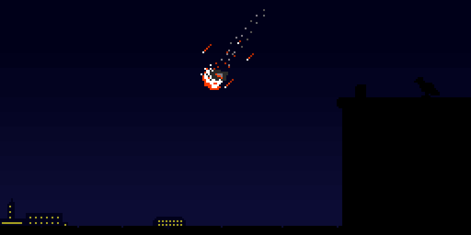

I was only taking a few looks at the planets and the Moon with a small telescope that night.
But suddenly while I was distracted on a call, a looked away from my telescope and looked at the sky behind me
For only a second, I saw something burn up in the sky and quickly disappear like nothing was there at all.
I wasn't able to take a picture at all because it was just so fast. The only witnesses to this show were me, a pigeon sitting on the bulkhead, and whoever else might've been lucky enough to look up at that exact moment.
Even without a photo and even if it sounds unbelievable, I still remember its weird shape, dark gray appearance, and pieces of it burning as it flew across.
It was a burning flash that disappeared into the horizon as it probably burnt up.